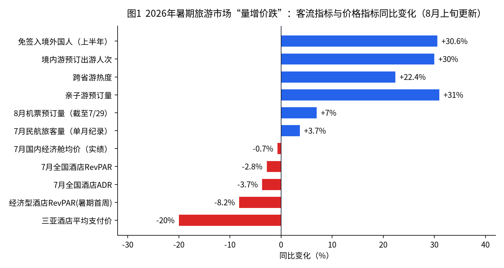
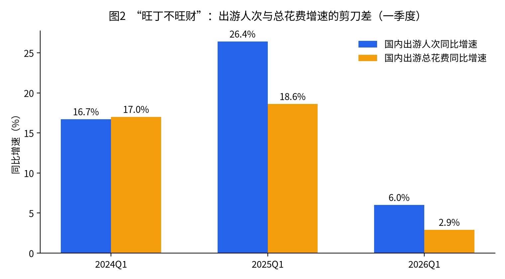
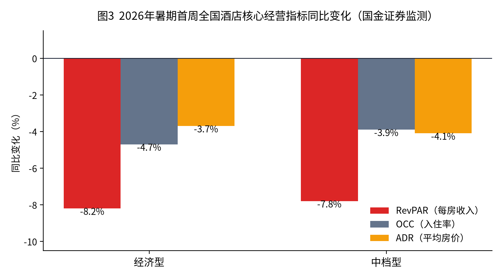
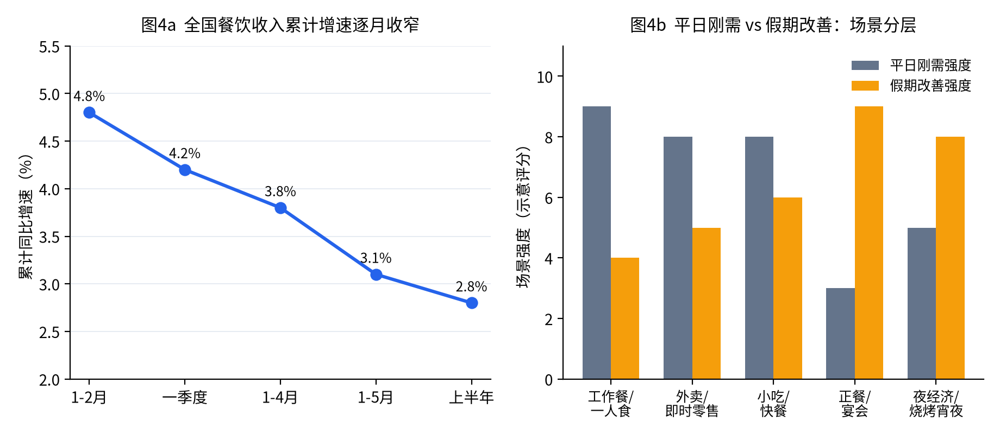

行业研究 · 文旅专题
2026年中国暑期旅游市场分析报告
—— 旺丁不旺财：客流新高与全链条价格下行的分化之年
◆出行：7月民航客运量创单月历史纪录，票价却创疫情后暑运新低
◆酒店：旺季不旺，RevPAR全线下跌后降幅收窄，行业等待拐点
◆餐饮：上半年收入增速放缓至2.8%，客单价普遍下探
◆门票：百余家景区掀"免票潮"，门票经济加速退场
◆客群：亲子占比超六成，人均消费持续走低、"能省则省"
◆附件一：酒店价格战专题分析
◆附件二：餐饮行业消费特征总结
摘要：为什么"人山人海"，行业却喊"不行"
2026年暑期，中国旅游市场呈现出近年少见的强烈分化：一方面，出行人次与预订热度全面创新高——全国铁路暑运预计发送旅客10.1亿人次、民航旅客运输量约1.42亿人次均创历史同期新高，境内游预订出游人次同比增长超30%；另一方面，旅游产业链几乎所有环节的价格与单位收益全面下行——机票、酒店房价、景区门票客单、餐饮客单价同比普跌，从业者"量增价跌、增收不增利"的体感强烈，"旅游市场不行"的行业反馈由此而来。
核心结论
- 总量层面并不"冷"：客流、预订量、出游半径均在扩张，4天以上长线游占比由28.4%升至47.1%，市场处于"量的高位"。
- 价格层面确实"冷"：7月上旬国内机票预订均价同比低近两成；暑期首周经济型、中档酒店RevPAR分别下跌8.2%、7.8%；黄山上半年门票客单同比-18%；餐饮客单价明显下探。
- 本质是"旺丁不旺财"进入第三年并加深：2026年一季度出游人次增速6.0%，总花费增速仅2.9%，花费增速显著低于人次增速，人均消费结构性下行。
- 成因是供需双向挤压：供给端酒店、航班、景区产能过剩，被迫以价换量；需求端居民消费趋于保守、核心亲子客源（低龄儿童）萎缩、出境游低价分流、春秋假错峰分流。
- 行业出路：从"流量思维"转向"客单价思维"，从规模扩张转向价值竞争——率先退出价格战、做深体验与二次消费的企业更可能穿越周期。
暑运上半程实绩速览（截至8月上旬更新）：7月民航旅客运输量7447.6万人次创单月历史纪录（+3.7%），但国内经济舱含税均价834.7元、同比-0.7%、较2019年-7.1%，是"疫情后机票最便宜的暑运"；铁路7月发送旅客4.32亿人次；全国酒店6月29日—7月26日RevPAR同比-2.8%（较暑期首周-8%左右明显收窄）。8月国内航线机票预订量同比+7%，8月8—9日机票预订环比暴增62%，下半程"量"的高峰确定性强、"价"的修复预计仅为结构性回升；入境游成为最大结构性亮点。
一、市场总览：热闹的客流与冷清的账本
需求侧的"热"是真实的。旅游平台数据显示，截至6月中旬，暑期旅游产品预订出游人次较去年同期增长20%，其中境内游预订增长超30%；飞猪7月初暑期旅游热度同比上涨超40%。携程数据显示，今年暑期跨省游热度同比增长22.4%，1—3天短途出游人次占比由71.6%降至52.9%，4天及以上长线游占比升至47.1%，"特种兵式"短途游让位于长线深度游。上海、新疆、云南、广东、北京位列热门省份前五，天津（+143.8%）、辽宁（+107.7%）等成为黑马目的地。
供给侧和价格端的"冷"同样是真实的。今年暑期，机票、酒店、门票、餐饮几乎全链条价格同比下行（详见图1），行业普遍"以价换量"。这与宏观数据一致：2026年一季度国内出游人次19.01亿、同比增长6.0%，但出游总花费1.86万亿元、同比仅增长2.9%，花费增速不足人次增速的一半，"增量不增收"的结构性矛盾正从短期扰动演变为中长期挑战。


春节假期已经预演了这一格局：2026年春节国内出游5.96亿人次（+19.0%）、总花费8034.83亿元（+18.7%）均创新高，但人均每日消费149.79元、同比下降11.32%，为2021年以来新低。暑期只是将这一"旺丁不旺财"逻辑放大到了全年最大的出游窗口。
二、出行：客流创历史新高，票价"旺季不涨反跌"
2.1 铁路与民航：总量新高，节奏"前低后高"
7月1日至8月31日为期62天的暑运中，全国铁路预计发送旅客10.1亿人次，日均1629万人次；民航旅客运输量预计约1.42亿人次，日均超228万人次，均创历史同期新高。今年多地中小学放假推迟至7月10日前后，暑运整体呈"启动较晚、后劲更足"的节奏。
上半程实绩已印证这一判断。据航班管家与国铁集团8月1日发布的数据，7月民航完成客运7447.6万人次，环比大增30%、同比+3.7%，创单月旅客历史纪录；全月执飞客运航班53.1万班次、日均1.71万班次（国内+1.7%、国际-1.5%），极端台风、雷雨天气造成单日航班量大幅波动。铁路7月累计发送旅客4.32亿人次，依靠广域路网承接大量中短途客流，与民航形成"空铁分层互补"格局；武西高铁西十段等新线新站开通进一步提升枢纽运力，多地开行消夏避暑旅游列车，把交通、景区、住宿、餐饮、演艺打包为"一票式"旅游服务。
2.2 机票：疫情后"最便宜的暑运"，以价换量贯穿始终
与客流新高形成鲜明反差的是票价。7月上旬是近年暑运票价"洼地"，全月数据也确认了"量升价弱"：
- 去哪儿数据显示，7月第一周国内机票预订均价同比低近两成，大量航线裸票价低于300元；北京—武汉含税机票450元，比高铁二等座便宜80元；北京—宁波往返机票不足1000元，而高铁票近1400元。
- 航班管家全月数据显示，7月国内经济舱平均票价834.7元（含燃油附加费），同比-0.7%、较2019年同期-7.1%——航司普遍反映"暑运第一周是亏钱的"，这是疫情后机票最便宜的一个暑运。
- TOP20国内航线中仅3条均价超千元（均为北京首都相关航线），16条票价同比下滑，深圳—北京、成都—北京、广州—北京等8条主干航线降幅超一成。
- 燃油附加费两连降：7月5日起800公里以上航段降至100元；8月5日起再降至70元（800公里以下40元），进一步压低出行成本。
票价低开的直接原因是供需错位：航司7月初即大幅增投暑运运力，而学生放假偏晚导致"航班多、客流少"；深层原因则是航司连续数年的"以价换量"竞争——运力供给增长快于高价值商务需求恢复，且旅客价格敏感度、对旺季高票价的"不包容度"都明显上升，高铁对中短途的分流持续。
2.3 下半程：客流高峰确定，票价修复只是"结构性"的
- 量的高峰已至：截至7月29日，8月国内航线机票预订量约1750万张、同比+7%，出入境航线预订超550万张、同比+6%；截至7月31日，预订8月8—9日出发的机票量环比上月增长62%；7月27日—8月1日全国客运航班量、旅客运输量同比+5.2%、+8.2%，增速逐周扩大。
- 价的修复有限：机构普遍判断，下半程票价较上半程低点存在边际改善空间，但在运力充足、价格竞争持续、旅客价格敏感的约束下，修复更可能是结构性、阶段性回升，而非全面上行——全暑期"量创新高、价低于去年"的格局基本锁定。
产业链体感：价格压力沿出行链条向下传导。以新疆为例，旅游包车主流车型利润跌幅超50%，超八成车辆无单可接，热门车型价格下跌三到四成；临近出发的机票、租车价格普遍跳水，"提前预订反而更贵"打乱了传统旺季定价体系。
三、酒店住宿：旺季不旺，全档次RevPAR下行
3.1 暑期开局：各档次每房收入全线下跌
国金证券监测显示，2026年暑假第一周（6月29日—7月5日），全国酒店市场从经济型到豪华型，各档次RevPAR（每间可售房收入）全部同比下跌：经济型下跌8.2%（其中入住率-4.7%、房价-3.7%）、中档型下跌7.8%（入住率-3.9%、房价-4.1%）；档次越高表现越坚挺，豪华型酒店入住率仅微跌0.2%（见图3）。

3.2 度假目的地：房价明显回落，"平价"成为主流选择
- 三亚：暑期已预订房间的平均实际支付价格同比下降约20%，其中五星级酒店降幅达25%；海棠湾部分度假酒店往年暑期均价可达2000元，如今"能卖到1600元就已经很好"。
- 云南：大理部分民宿降价近50元仍少有游客问津，入住率明显下滑；丽江有中端连锁酒店房价打对折、入住率仍不足50%。
- 结构分化：中端酒店均价同比下降约8%，200元以下平价酒店入住率逆势上升；RevPAR、ADR同比提升的城市中，三线及以下城市占比高达90%（唐山、宜昌、濮阳等），下沉市场成为住宿业为数不多的亮点。
需要指出的是，"旺季不旺"不等于全行业亏损：头部集团通过扩网络、提入住率仍能保住利润盘（如华住在RevPAR下降2%的情况下，入住率升至82.6%、单季净利仍两位数增长），但单体酒店与非头部加盟店承受了最大的价格战冲击——部分单体酒店暑期入住率、单房收入双降两成。酒店价格战的成因与演化详见附件一；餐饮消费特征详见附件二。
3.3 7月全月：降幅收窄，"暑期前段或为底部"
随着7月中下旬客流启动，酒店经营的边际变化值得关注。酒店之家监测显示，6月29日—7月26日全国酒店RevPAR、入住率、房价平均分别同比-2.8%、-0.9%、-3.7%——相较暑期首周RevPAR约-8%的跌幅明显收窄；STR数据显示6月28日—7月25日全国各级别酒店入住率逐周上升。去哪儿7月国内酒店预订量TOP10目的地为：北京、上海、成都、青岛、杭州、贵阳、南京、伊犁、广州、重庆——避暑属性城市（贵阳、伊犁）与文博强市（北京）走强，连住订单增长明显。
- 需求底部研判：国金证券认为暑期前段或为出行需求底部，随需求滞后释放、天气扰动减弱、中秋假期前置、中小学秋假落地，行业有望重回景气，"酒店集团股价通常领先RevPAR见底"，周期配置窗口渐近。
- 供给收缩已启动：住宿和餐饮业固定资产投资累计增速3月转负、6月降至-13%，但酒店房量仍同比+6.5%——投资收缩传导到供给需要时间，机构预计未来半年至一年供给增速逐步回落，供需关系改善确定性较高。
- 从业者情绪仍谨慎：中国旅游饭店业协会MSI三季度景气指数为-17，较上季下降8点，连续四个季度改善后回调；从业者预计Q3入住率环比+4.8%、房价环比-1.6%、RevPAR环比+3.1%——"量的修复"未能充分转化为"价和收入的修复"。
四、餐饮：旺季"脉冲"难改增速放缓与客单下探
国家统计局数据显示，2026年1—6月全国餐饮收入28255亿元，同比增长2.8%；6月单月增长仅1.2%，限额以上单位餐饮收入单月仅增0.1%。餐饮收入增速虽仍高于社零总额增速1.5个百分点、继续发挥"压舱石"作用，但行业已明确进入存量竞争与低增速区间，暑期旅游客流带来的更多是"短期脉冲"而非基本面反转。
4.1 客单价：从"多点几个菜"到"连啤酒都少点"
- 消费者"能省则省"心态明显，正餐、酒水支出显著缩减，旅游餐饮"旺丁不旺财"；有华北餐饮业者反馈"客单价下降十分明显，大家不是不吃，而是不敢花"。
- 客流向两端集中：头部特色品牌、高质价比小店持续获客，大量同质化中间层门店客流流失；快餐、简餐、平价本地餐饮承接了旅游客群的主要餐饮需求。
- 亮点在"文旅融合场景"：演唱会、赛事、夜市等场景对周边餐饮拉动明显（携程监测部分演唱会带动举办城市旅游预订平均增速近60%），消费券的杠杆效应也较高（如武汉小龙虾消费券撬动比近1:7）。
4.2 对旅游目的地的含义
餐饮是景区"二次消费"和目的地综合收益的核心构成。在门票让利、住宿降价的背景下，若餐饮客单价同步下探，目的地"以流量换综合消费"的模型将进一步承压——这正是今年不少目的地"人来了、钱没来"的微观机制。
五、景区门票：免票潮之下，"门票经济"加速退场
5.1 史上最大规模的暑期"免票潮"
2026年毕业季起，全国已有逾100家景区面向应届中高考毕业生推出免票福利，湖北、福建、四川、安徽、云南、陕西等十余省份参与：黄山市9家4A级以上收费景区对中高考学生及应届大学毕业生免票；都江堰7—8月对应届中高考毕业生免费入园；陕西超50家景区参与免票；多地叠加"家属随行折扣""好友同行特惠"，试图以"1+N"家庭消费链放大单次出游消费基数。
5.2 门票收入与客单：普遍承压、景区分化
- 受免票活动等影响，黄山上半年门票客单同比下降18%；黄山、长白山7—8月接待人次同比上升约7%，呈典型"量升价降"。
- 景区间明显分化：西安演艺类项目游客人次和门票收入同比增长超一倍，而杭州、丽江、张家界等地演出场次同比下滑；乌镇、古北水镇受高基数影响客流承压，上半年人均消费分别同比下降5%、11%。
- "门票减法"未必自动带来"消费加法"：多家景区反映文创产品与园内活动"叫好不叫座"，二次消费转化偏低，免票带来的客流红利难以完全变现。
积极的一面：主动做深二次消费的景区已看到效果。三亚亚特兰蒂斯通过丰富演艺、婚礼等非房产品并主动下调客单，上半年非房收入占比提升4个百分点至49%，入住率89.6%、到访人次343.5万均创历史新高——"降客单、扩客群、提综合收益"是门票经济退场后的可行路径之一。
5.3 玩法更新：高温改写流量分配，"避暑"成为绝对C位
7月中下旬多地持续"烧烤模式"，直接改写了景区流量的分配逻辑，"花式追凉"成为暑期过半后的主线：
- 避暑关键词爆发：去哪儿数据显示，7月"避暑""纳凉""夜游"相关搜索量环比增长270%；"工厂参观""博物馆""美术馆"等室内场所搜索量环比增长210%，游客形成"日间室内+夜间夜游"的消暑模式。
- 溶洞游"弯道超车"：同程数据显示"洞穴""溶洞"关键词搜索热度环比增长超100%，洞穴主题产品预订热度环比+72%；贵州织金洞搜索热度环比+112%，周边酒店民宿预订环比+36%，游客平均停留延长至1.5天——天然18℃的溶洞正从"地质奇观"进化为"地心避暑舱"。
- 山水与海滨分流：溯溪、峡谷漂流主题住宿抢手；三亚、青岛、大连、厦门、秦皇岛等领跑海滨海岛游榜单。12岁以下儿童最青睐景区TOP3为普达措国家公园、涠洲岛、苍海云上草原（天然"自然避暑房"），13—18岁青少年则集中在北京环球度假区、上海迪士尼等主题乐园。
对景区的含义：在门票让利的背景下，"清凉资源"本身成为新的定价权来源——具备避暑属性、夜游产品和室内体验的景区获得超额流量，纯观光、高曝晒型景区则被高温进一步削弱。
六、旅游人群与客单价：谁在出游，钱花在了哪
6.1 客群结构：亲子独大、学生与银发补位、下沉市场放量
- 亲子客群占比超六成：同程数据显示暑期亲子产品预订热度同比上涨45%，亲子客群占总出行人数比重超六成、较去年提升8个百分点；研学、夏令营类产品增长更快，境内长线研学平均出游5天、出境研学超7天。
- 毕业生与学生流：免票政策叠加毕业旅行，构成7月上旬第一波高峰；三、四线城市居民出行需求持续释放，是增量的重要来源。
- 出游方式碎片化：自由行、定制游、小团游、私家团更受青睐，平台暑期自由行预订出游人次同比增长近80%，传统低价大团加速被淘汰。
- 年轻客群与银发族放量（7月更新）：去哪儿数据显示，19—22岁群体以20%的机票预订增幅领跑暑期出游；60岁以上"银发族"增长显著，倾向带娃"隔代度假"或前往气候宜人目的地"康养旅居"。
6.2 入境游：暑期最大的结构性亮点
在国内客单价普遍承压的同时，入境游呈现罕见的"量价齐升"，成为暑期市场最确定的增量：
- 总量高增：国家移民管理局数据显示，2026年上半年入境外国人2291.4万人次、同比+20.4%，其中免签入境1781.5万人次、同比+30.6%、占比77.7%；上半年全国出入境人员3.69亿人次创历史新高。
- 暑期"淡季不淡"：携程数据显示暑期欧洲来华订单量同比+275%（俄罗斯订单同比+553%，西欧六国合计增幅近150%），门票订单量增长超20倍；业者反馈小语种市场客源平均增幅约20%。
- 走得更深、住得更久：入境航班目的地已覆盖国内160个城市（同比新增20个），稻城、格尔木等"宝藏小城"首次迎来批量国际游客；途家数据显示暑期外国游客民宿平均入住4.7天、高于国内游客，伊犁、阿勒泰、黔东南、安顺、伊春等地外国游客民宿预订量同比翻倍。
入境游的意义不止于流量：外国游客停留时间长、客单价高、偏好深度体验，恰好对冲了国内客群"降频提质、能省则省"带来的客单缺口。对目的地而言，承接入境游的多语种服务、支付便利化与非标住宿供给，正在成为新的竞争力项。
6.3 客单价：结构性下行是主线
| 指标 | 数据表现 | 方向 |
|---|
| 2026Q1 国内出游人均花费 | 约978元/人次（1.86万亿元/19.01亿人次），花费增速2.9%显著低于人次增速6.0% | 下行 |
| 2026春节 人均每日消费 | 149.79元，同比下降11.32%，2021年以来新低 | 下行 |
| 2025全年 人均出游花费（参照） | 前三季度970元，较2024年全年1024元下降5% | 下行 |
| 7月国内经济舱均价（全月实绩） | 834.7元（含燃油附加费），同比-0.7%、较2019年-7.1%，疫情后暑运最低 | 下行 |
| 7月全国酒店ADR/RevPAR（6.29—7.26） | 同比-3.7%/-2.8%（较暑期首周约-8%收窄） | 下行 |
| 三亚酒店平均支付价 | 同比约-20%，五星级-25% | 下行 |
| 黄山门票客单（上半年） | 同比-18% | 下行 |
| 乌镇/古北水镇人均消费（上半年） | 同比-5%/-11% | 下行 |
| 出游人次/预订量 | 境内游预订+30%、跨省游热度+22.4%、亲子预订+31%~45%；7月民航客运量+3.7%创纪录 | 上行 |
| 入境游（上半年/暑期） | 入境外国人+20.4%、免签入境+30.6%；暑期欧洲来华订单+275%，量价齐升 | 上行 |
客单价下行并非"不出游"，而是"口红效应"在旅游领域的映射：保留出行的仪式感与体验感，但压缩每一项开支——机票等促销再买、酒店从五星降到中端或平价、大餐改小吃、门票挑免票景区。值得注意的是，出境游的低价化加剧了国内目的地的比价压力：国际机票均价同比下降22%、国际酒店均价下降24%，部分东南亚目的地综合花费已低于国内热门目的地，形成对国内中高端度假产品的直接分流。
七、"旅游市场不行"的六大原因剖析
综合上述各环节数据，行业"体感差"与总量数据"体面"并不矛盾——从业者感受的是单位收益而非总客流。造成今年暑期"旺丁不旺财"加深的原因可归纳为六点：
| 原因 | 机制与证据 |
|---|
| 1. 高基数效应 | 2023—2025年疫后补偿性出游透支了价格弹性，2024年起酒店ADR、机票均价即进入回落通道；今年是在"高价年"基数上继续下行。 |
| 2. 供给全面过剩 | 全国酒店总量突破40万家、中端以上在营8.4万家/907万间客房；航司运力增投快于需求；景区、演艺项目扎堆上马。存量出清慢，价格踩踏不可避免。 |
| 3. 消费心理转向保守 | 居民收入预期谨慎，"能省则省"，人均消费连续下行；服务消费向体验化、质价比迁移，愿意出门但不愿多花。 |
| 4. 核心客源萎缩 | 暑期消费的发动机是低龄儿童家庭："一个孩子撬动一家人的长线出行"。2022—2025年全国在园幼儿减少超1400万人，2025年小学生在校人数减少超400万人，亲子基本盘趋势性收缩。 |
| 5. 错峰与分流 | 多地推行春秋假，分流暑期集中出游；免签扩容+国际机酒大幅降价，出境游对国内中高端度假形成价格分流。 |
| 6. 结构性替代 | 短途高频、小城游、平价住宿、免票景区替代长价高价产品；流量向头部品牌、特色小店、下沉市场集中，传统中间层供给（中端酒店、同质化景区、普通餐馆）最受挤压。 |
八、趋势展望与建议
8.1 对暑期后市的判断（8月上旬更新）
- 量的高峰确定兑现：8月国内航线机票预订量同比+7%、8月8—9日出发机票预订环比+62%，7月末航班量与旅客量增速逐周扩大，8月中上旬迎来全暑期客流最高峰已无悬念。
- 价的修复只是结构性的：机票、酒店价格较上半程低点有边际改善，但运力与房量供给仍充足、旅客价格敏感度高，修复表现为结构性、阶段性回升而非全面上行；全暑期"量创新高、价低于去年"的格局基本锁定。
- 拐点信号开始积累：酒店RevPAR降幅由首周约-8%收窄至7月全月-2.8%、入住率逐周回升；住宿餐饮固定资产投资增速6月已降至-13%，供给收缩启动。机构判断"暑期前段或为需求底部"，叠加中秋假期前置、中小学秋假落地，Q4供需关系有望边际改善——但从业者景气指数（MSI三季度-17）显示体感修复仍需时间。
- 分化继续：豪华与平价两端相对坚挺、中间层最难；避暑线（贵阳、伊犁）、清凉资源型景区与入境游好于传统热门度假地。
- "旺季"概念趋于弱化：核心亲子客源收缩+春秋假分流是趋势性变量，有从业者判断"今年很可能是未来若干年暑期行情最好的一年"——旺季削峰、淡旺季价差收窄将成为常态。
8.2 对从业者的建议
- 从流量思维转向客单价思维：考核"让人来"不如考核"让人花"——延长停留、做深二次消费（餐饮、演艺、夜游、文创、研学），参考亚特兰蒂斯非房收入占比近半的路径。
- 放弃对"报复性旺季"的幻想，重构成本模型：按"平季化"客单价倒推投资与运营成本，避免以2023—2024年价格水平测算回报。
- 差异化定价而非普遍降价：稀缺资源、强体验产品价格坚挺（三亚亚特兰蒂斯、亚龙湾米高梅等暑期依旧坚挺），说明消费者不是"没钱"而是"更挑"；同质化产品降价只会加速价值毁灭。
- 拥抱结构性增量：银发、研学、演艺+旅游、入境游、下沉市场是少数量价齐升的赛道；"演唱会带动城市预订+60%"式的事件营销值得目的地系统化运营。
附 件 一
酒店价格战专题分析
供给过剩、加盟扩张与OTA博弈下的行业内卷及破局路径
附一-1. 价格战的表现：从淡季蔓延到旺季的全面降价
本轮酒店价格战自2024年发端，2025年加剧，到2026年已从淡季蔓延至传统旺季，呈现三个特征：
- 房价连续回落：第三方机构监测显示国内酒店平均房价已连续多个季度同比下滑；2026年暑期首周，经济型、中档酒店ADR分别同比下跌3.7%、4.1%，叠加入住率下滑，RevPAR跌幅达8.2%、7.8%。
- 高端"放下身段"：多个城市出现奢华品牌淡季房价从2000元/晚降至800—900元/晚的现象；三亚五星级酒店暑期实际支付价同比下降25%，海棠湾标杆酒店从2000元降至1600元档。
- 降价不再必然换来订单：丽江有中端连锁酒店房价打对折、入住率仍不足50%；大理民宿降价后依旧"无人问津"——价格战已进入边际效果递减阶段。
典型微观样本：华东某酒店同一时点、入住率相近，去年6月均价181元/晚，今年只能卖142元/晚，RevPAR缩水40元，整体营收下滑25%。经营者的总结只有两个字："过剩"。
附一-2. 根源之一：供给过剩与出清缓慢
- 总量失衡：《2026年中国酒店投资白皮书》显示，全国酒店总量已突破40万家，中端及以上在营酒店8.4万家、客房供给907万间；而需求端人均花费仍在下行，"蛋糕没有变大，切蛋糕的人还在增加"。
- 扩张惯性：疫后2023年行业暴利（21家酒店集团净利润平均增长1.3倍）诱发投资潮，此后新开业酒店数量连年高于2019年同期；头部集团待开业储备仍以千家计（华住单季新开774家、待开业2899家的节奏具有代表性）。
- 出清缓慢：酒店不同于制造业，"只要没关门，房间库存就一直在那"——工厂可以减产，酒店不能减房。新增供给持续进场、老旧供给退出缓慢，库存持续走高形成价格踩踏。
- K型背离：供给端仍在加杠杆扩张，需求端消费者在去杠杆，"供需两端朝相反方向运行"是从业者感觉一年比一年难的根本原因。
附一-3. 根源之二：加盟扩张模式的内生矛盾
头部酒店集团的商业模式放大了价格战。截至近期，华住、锦江、首旅加盟店占比分别约93%、94%、90%，加盟服务费是集团收入的支柱之一（锦江上半年持续加盟服务收入占比33.37%，仅次于客房收入）。这意味着：
- 集团激励与单店利益错位：新开门店越多，集团加盟费收入越高——即便区域供给已经饱和。有加盟商反映集团在其门店600米内再开同品牌新店，年营业额损失约10%；一线城市核心商圈同品牌门店相距仅百余米的情况并不罕见。
- 费用刚性挤压单店利润：以一间200元的客房为例，加盟商需向集团缴纳的各类费用（加盟管理费、CRS预订费、总经理费等）可达80元、占比40%，叠加OTA佣金后，单店在降价环境中利润被双向挤压。
- "关老店、开新店"的变相内卷：2025年下半年起，头部集团策略从"降价保入住率"转向"汰旧换新抬房价"——大量关闭老店、以高定价新店置换。但在市场总量不扩张的前提下，"投资不断增加、价值没有增加"，本质是行业内耗，且进一步加速了单体和老旧酒店的出局。
附一-4. 根源之三：酒店与OTA的渠道博弈
- 利润的反差：酒店集团利润普遍下滑（此前一轮财报中锦江净利同比一度下降约43%，14家大型集团中10家净利下滑），而同期OTA平台利润高增（携程单季净利+47%、同程经调整净利+55%），舆论将矛头指向10%—25%的渠道佣金。
- "提直降代"运动：华住要求旗下门店OTA预订占比控制在30%以下，创始人季琦公开批评部分门店"依赖OTA、丧失核心竞争力"；万豪、洲际、凯悦、希尔顿等则削减第三方渠道预订的会员权益，力推自有渠道。
- 中小酒店的现实依赖：国内酒店连锁化率仅约40%，海量单体酒店和旅游目的地酒店（低复购场景）离不开OTA流量，"只要能满房，佣金并不贵"是普遍心态——渠道博弈的结果更可能是头部集团与OTA的再平衡，而非"去OTA化"。
- 平台侧的修正：头部OTA开始调整推荐算法（从低价排序转向高价值房型推广）并输出AI降本工具，试图缓解低价内卷——平台与酒店在"跳出价格战"上存在利益交集。
附一-5. 价格战的影响评估
| 层面 | 影响 |
|---|
| 消费者 | 短期受益于"800元住到过去2000元的酒店"；但长期看服务缩水、投资停滞将损害供给质量。价格锚点一旦下移极难修复——"习惯了瑞幸价格的消费者很难回到星巴克"。 |
| 单体/加盟业主 | 受冲击最大：入住率与房价双降、集团费用与OTA佣金刚性，部分业主陷入"不降价没客人、降价不赚钱"的双输局面。 |
| 酒店集团 | 利润承压但仍可依靠规模与轻资产模式对冲（华住入住率82.6%、单季净利两位数增长）；分化加剧，经营能力弱的集团（净利腰斩）与强运营集团差距拉大。 |
| 投资市场 | 供给过剩推高运营成本、压制NOI增长，酒店资产"买得起、卖不掉"，非核心地段中低端资产流拍率上升，形成"价格战→利润下滑→投资减少→出清滞后"的负循环。 |
附一-6. 破局路径与展望
- 价值竞争替代价格竞争：行业共识正在形成——未来两三年"最终活下来的，反而是那些率先退出价格战、重新想清楚自己到底在卖什么的酒店"。服务体验（如丽江精品民宿以免费餐饮细节营造"值回票价"感）、场景创新（全季以商用洗烘设备吸引年轻客群）成为新的竞争维度。
- 第二增长曲线：亚朵以"酒店+零售"跳出存量厮杀（零售GMV单季同比+107.7%，深睡枕年销超3.6亿元），证明住宿流量可以向生活方式品牌变现；头部集团下沉县域市场寻找结构性增量。
- 收益管理精细化：从"一刀切降价"转向差异化定价、捆绑销售与会员直销，守住ADR底线的同时以非房收入（餐饮、康养、演艺、婚礼）补足RevPAR。
- 供给端出清是最终解：价格战的尽头是产能出清。判断拐点的关键指标：新开业/关店比、待开业储备去化速度、三线以下城市ADR能否企稳。在出清完成前，"旺季不旺"仍将是酒店业常态。
专题结论：本轮酒店价格战本质不是营销竞争，而是供给过剩周期+需求理性化+渠道成本刚性三重压力下的行业出清过程。对经营者而言，与其在价格上"卷到没有底线"，不如尽早回答"我到底在卖什么"；对投资者而言，规模扩张逻辑已经失效，运营效率与差异化定位是新的估值锚。
附 件 二
餐饮行业消费特征总结
假期脉冲、场景分层、质价比与品质升级并存下的消费画像
本附件在正文第四章基础上，系统归纳2026年上半年及暑期窗口的餐饮消费特征，回答三个问题：消费者怎么吃、钱花在哪、行业该如何匹配新需求。核心判断是——餐饮消费并未全面"熄火"，而是进入"大盘稳固、结构分层、质价比与品质并存"的新常态；暑期旅游客流带来的是脉冲增量，不足以扭转低增速基本面。
附二-1. 总量特征：压舱石仍在，增速逐月收窄
| 指标 | 2026年上半年表现 | 解读 |
|---|
| 全国餐饮收入 | 28255亿元，同比+2.8% | 继续高于社零总额增速1.5个百分点，占社零11.4% |
| 限额以上餐饮收入 | 8328亿元，同比+1.8% | 规模以上企业增速更弱，承压更明显 |
| 6月单月餐饮收入 | 4767亿元，同比+1.2% | 限上单位仅+0.1%，旺季前夕已显疲态 |
| 累计增速轨迹 | 1—2月+4.8% → 一季度+4.2% → 1—4月+3.8% → 1—5月+3.1% → 上半年+2.8% | "前高后低、逐月放缓"，内生动力切换 |
| 住宿和餐饮业增加值 | 同比+5.0% | 与服务业增加值增速（约5.2%）基本同步 |

中国饭店协会CCI指数显示，上半年餐饮消费呈典型"M"字走势：2月达高峰（指数103.2），5月形成次高峰，6月季节性回落但同比仍+5.8%。市场底盘稳固，但增长高度依赖假期脉冲，平日韧性不足。
附二-2. 八大消费特征
特征一：假期脉冲、平日平淡——"双模式"消费定型
平日以工作餐、一人食、外卖等分散型刚需小额消费为主；节假日集中释放聚餐、宴会、家庭改善型消费。订单量走势与综合指数常呈反向：3—4月非传统旺季订单量走高，但改善型客单集中在假期。对门店而言，"平日保翻台、假期拉客单"成为标准经营逻辑。
特征二：质价比主导，"刺客"退潮，大众餐饮放量
- 消费决策从"为溢价买单"转向"为价值买单"；人均50—80元大众餐饮订单量激增（假期监测样本中达+42%），小吃增速显著高于正餐。
- 网红高溢价"刺客"产品因营销成本畸高、符号溢价失效而承压；真正有产品力的品质正餐仍可守住溢价。
- 旅游场景中，游客更倾向本地小吃、平价餐厅与团购套餐，正餐、酒水支出明显缩减——"不是不吃，而是不敢花"。
特征三：客单价企稳与"降频提质"并存
行业价格战治理初见成效：上半年客单价在2月冲高回落后连续三月运行在基准线上方，6月客单价指数同比仍增长6.4%。交叉指标显示，3—5月订单量回落但客单价未明显下行，5月甚至出现"订单下滑、客单上行"——消费者逐步形成"降频次、提品质"习惯，愿意在假期为高品质体验支付溢价。这不是单纯的消费降级，而是消费分级。
特征四：一人食与微消费崛起
独居与单身生活方式推动"一人食经济"快速扩容（行业研究显示相关市场规模已突破万亿级、维持双位数复合增速）。工作简餐、单人套餐、健康轻食成为平日刚需主力，要求门店在套餐设计、出餐效率与外卖适配上完成产品重构。
特征五：场景与城市双重分层
- 场景分层：刚需简餐 vs 改善聚餐；堂食体验 vs 外卖即时；本地生活 vs 文旅二次消费，各场景价格带与决策逻辑不同。
- 城市分层：一线城市餐饮价格高位运行、抗跌性强，稳住全国基本盘；二线城市价格波动更大；三、四线城市节假日涨幅突出但日常韧性不足。下沉市场刚需小吃与快餐表现相对强劲。
特征六：情绪价值与体验付费上升
消费者不再只为"好吃/饱腹"买单，更愿意为情绪价值、社交属性、健康指标付费。菜品丰富度、卫生安全、价格与营养健康成为最关注因素；卫生安全更被半数以上消费者列为外出就餐首要考量。竞争维度从"口味+价格"升级为"品质+体验+健康+信任"。
特征七：文旅联动与夜经济成为暑期增量抓手
- 演唱会、赛事、夜市对周边餐饮拉动显著（正文已述部分演唱会带动城市旅游预订平均增速近60%）；消费券杠杆效应仍有效（如武汉小龙虾消费券撬动比近1:7）。
- 暑期"清凉经济"与夜经济潜力大：烧烤、宵夜、精酿、夏日限定套餐承接夜间休闲流量；高温天气下外卖成为挽回堂食流失的关键渠道。
- 目的地餐饮是景区免票后"二次消费"的核心构成；若客单价同步下探，"以流量换综合消费"模型将进一步承压。
特征八：渠道与业态数字化深化
外卖从粗放获客转向精细化运营；即时零售（餐饮+零售）成为新增长极；团购、直播、本地生活平台深度介入客流分配。中小商户面临"不参与没流量、参与没利润"的平台两难——与酒店业的OTA困境高度同构。
附二-3. 消费画像速览
| 维度 | 平日刚需画像 | 假期/旅游画像 |
|---|
| 核心诉求 | 快、稳、干净、可预期 | 氛围、合照、本地特色、家庭共享 |
| 价格带 | 人均约30—80元 | 人均约80—200元（改善型可更高） |
| 主力业态 | 小吃、快餐、简餐、轻食、外卖 | 正餐、地方菜、烧烤宵夜、主题餐厅 |
| 决策关键词 | 质价比、距离、出餐速度 | 口碑、场景、情绪价值、套餐优惠 |
| 渠道偏好 | 外卖APP、会员复购、社区门店 | 大众点评/小红书种草、团购、现场排队 |
| 对客单价影响 | 拉高频次、压低客单 | 抬高客单、但频次集中且可预测 |
附二-4. 对旅游目的地与餐饮企业的含义
| 主体 | 应对要点 |
|---|
| 旅游目的地/景区 | 免票引流后必须把餐饮做成二次消费主力：推出本地特色套餐、夜市与演艺联动、家庭合餐产品；避免只靠同质化文创变现。 |
| 正餐与宴会门店 | 假期抓客单、平日补一人食/商务简餐；坚持品质路线，避免重回价格战；用套餐清晰化降低决策成本。 |
| 小吃/快餐/下沉品牌 | 承接大众质价比红利，强化供应链效率与单店盈利；警惕平台佣金侵蚀毛利。 |
| 外卖与即时零售 | 高温与恶劣天气下用外卖对冲堂食流失；即时零售可作为第二曲线，但不能牺牲堂食体验。 |
附件二结论：2026年餐饮消费的核心特征可浓缩为八个字——假期脉冲、分级消费。大盘仍是社零压舱石，但增长依赖假期与场景创新；消费者在平日极致质价比、在假期愿意为品质与情绪价值付费。对文旅产业链而言，餐饮是连接"人来了"与"钱留下"的关键环节——谁能同时打赢"平日刚需"和"假期体验"两场仗，谁就能在"旺丁不旺财"周期中守住客单价。
参考资料
- 央广网：《铁路暑运预计发送旅客10.1亿人次》，2026-07-18。
- 中国青年报：《10.1亿人次大幕拉开 出行行业迎战暑运大考》，2026-07-08。
- 同程旅行：《2026年暑运出行趋势预测报告》，2026-06-26。
- 新浪科技：《2026暑期出游趋势预测：境内游预订热度增长显著》，2026-06-16。
- 新旅界：《携程发布2026暑期旅游新趋势：长线避暑旅游目的地热度攀升》，2026-07-03。
- 中国金融信息网：《暑期文旅热度升温 体验型消费人气高》，2026-07-13。
- 财经网：《暑期机票价格罕见"低开" 亲子游与大学生出行逻辑生变》，2026-07-03。
- 21财经：《7月多条航线现百元低价机票，点燃暑运市场订票热情》，2026-07-10。
- 澎湃新闻：《民航暑运前瞻：整体票价同比涨近两成，7月上旬为票价"洼地"》，2026-07。
- 新华财经：《民航暑运低价"起跑" 出行高峰后移成色可期》，2026-07-09。
- 虎嗅网：《暑期旅游的黄金旺季，再也回不来了》（含国金证券暑期首周酒店RevPAR监测数据），2026-07。
- 中国烹饪协会：《稳中有进 分化加剧 转型深化——2026年上半年全国餐饮业发展分析》，2026-07。
- 中国饭店协会 / 人民网：《中国餐饮业消费指数报告（2026年上半年）》：假期拉动显著，客单价企稳、场景分层、品质升级，2026-07。
- 中国经济网：《2026年上半年餐饮消费市场稳步复苏 结构分层品质升级态势凸显》，2026-07-22。
- 36氪：《2026，中产反杀餐饮"刺客"》（质价比与大众餐饮放量），2026。
- 人民网：《毕业旅行热度攀升 多地景区减免门票抢客》，2026-06-15。
- 腾讯新闻：《全国多家景区推出中高考考生专属优惠》，2026-06-18。
- 迈点研究院：《2026年一季度中国旅游市场分析报告》，2026。
- 联合资信：《旅游行业运行分析（2026年6月）》，2026-06-23。
- 网易财经/《财经》：《为啥出游人次再创新高而做旅游生意的赚钱的却不多？》，2025-11。
- 36氪：《淡季的国内酒店，卷到没有底线了》《令人窒息的淡季：今年酒店业又是"史上最难"？》，2026。
- 36氪：《三亚暑期酒店暴跌，游客都去哪了？》；界面新闻：《这个暑期住宿业"旺季不旺"，但仍有酒店赚到了钱》。
- 界面新闻·无冕财经：《盈利下滑的酒店，又将枪口对准OTA》。
- 野马财经：《去下沉、搞副业，华住、亚朵们的新战场》。
- 财联社：《暑期航旅市场竞争激烈：部分酒店RevPAR降两成 航司以价换量》。
- 九方智投（券商研报摘编）：《旅游酒店及餐饮：暑期旅游面临高基数；客流分化客单承压》。
- 第一财经：《近年来最便宜的暑运上半场：旅客量创新高，票价创新低》，2026-08-01。
- 财联社/21财经：《上半程以"量升价弱"收尾 暑运民航8月客流有望走强》，2026-08-01。
- 中国经营报：《2026年暑运上半场铁路客流稳居主力 航空长途跨境承压》（航班管家DAST 7月监测），2026-08-01。
- 央视网/国铁集团：《暑运绘就"流动中国"活力画卷》（7月铁路发送旅客4.32亿人次），2026-08-01。
- 国金证券：《酒店行业26Q3投资策略：风雨之后见拐点，周期配置迎窗口》（酒店之家、STR监测数据），2026-08。
- 中国旅游饭店业协会/厚海：《MSI·2026年第三季度中国酒店市场景气调查报告》，2026-08。
- 央广网/北京商报：《暑期过半数据盘点：北京居国内酒店预订量首位》，2026-08-05。
- 央广网：《暑期过半，花式"追凉"持续搅热旅游市场》；同程旅行：《2026"地心避暑舱"洞穴游指南》，2026-08。
- 国家移民管理局：《上半年3.69亿人次出入境 创历史新高》，2026-07；中国旅游报：《此间烟火醉远客 暑期入境游走俏》，2026-08-03。
- 21财经：《上半年入境外国人2291.4万人次："中国游"持续升温》，2026-07-17。
说明：本报告基于公开报道与机构监测数据整理，部分历史对照数据（2024—2025年）用于刻画趋势延续性；不同口径（预售价与成交价、含税与裸票价）的数据已在正文中分别注明。本报告仅供参考，不构成投资建议。